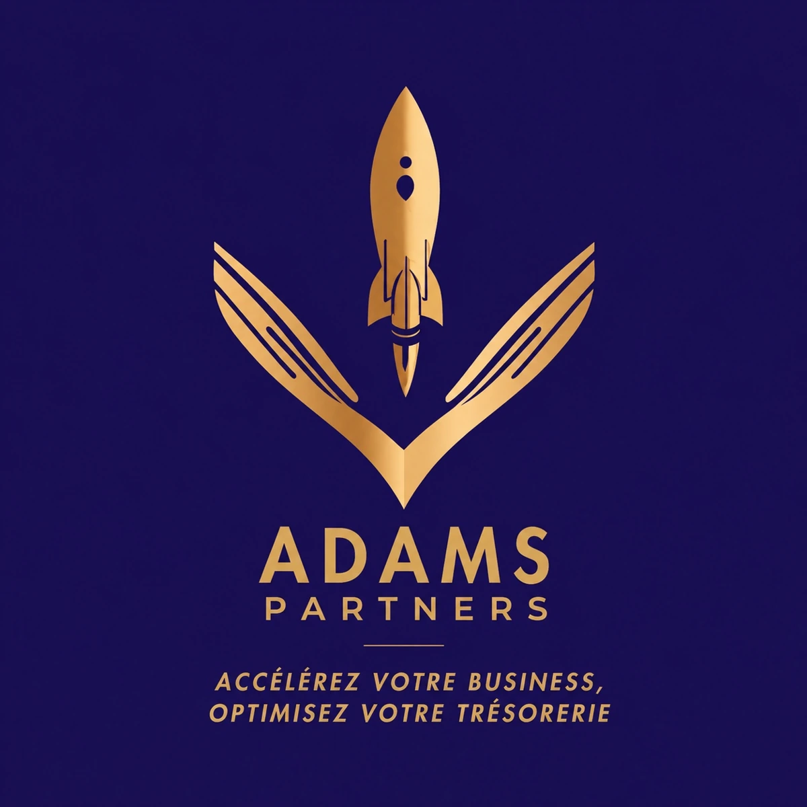
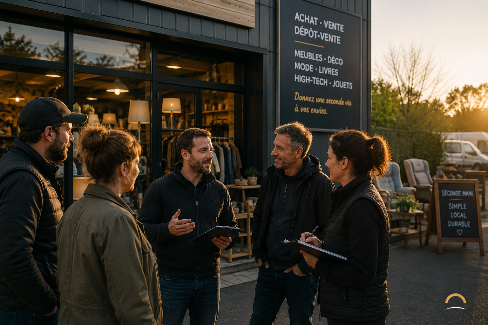

Une franchise ou une méthode imposée.
Vous restez libre de vos choix, de votre stratégie et de votre identité.

Pour les dirigeants indépendants de magasins de seconde main (type Cash, dépôt-vente)
HORIZON vous apporte le niveau d’accompagnement que l’on trouve habituellement dans les réseaux, tout en préservant votre liberté de décision.
La puissance d’un réseau. La liberté d’un indépendant.
Être indépendant ne devrait jamais vouloir dire être seul.
Pourquoi HORIZON ?
Diriger un magasin de seconde main demande de maîtriser plusieurs métiers à la fois : les achats, l’estimation, le dépôt-vente, la vente, le management, le recrutement, l’organisation, la communication et le pilotage de la performance.
Les décisions s’enchaînent. Elles engagent votre équipe, votre trésorerie, votre stock et l’avenir de votre entreprise.
HORIZON a été conçu pour vous donner accès à un interlocuteur qui comprend réellement votre métier et avec qui confronter vos idées, vos doutes et vos projets.
L’accompagnement est personnalisé. L’engagement, lui, est constant.
Vous restez libre de vos choix, de votre stratégie et de votre identité.
Un accompagnement durable, humain et construit autour de votre réalité.
Ce qui nous guide
Les décisions appartiennent toujours au dirigeant.
Les meilleures décisions partent de la réalité du magasin.
Écouter avant de conseiller. Comprendre avant d’agir.
Faire circuler les expériences et les bonnes pratiques.
Apporter une réponse claire, utile et exploitable.
Construire une relation directe, durable et transparente.
La méthode HORIZON
HORIZON ne vous enferme pas dans un programme standard. Les ressources sont mobilisées selon votre situation, vos projets et les enjeux de votre magasin.
Une journée complète dans votre entreprise pour comprendre son fonctionnement, ses ambitions et ses priorités.
Des temps terrain pour observer, mesurer les évolutions, échanger et préparer les prochaines étapes.
Un interlocuteur privilégié qui connaît votre magasin et votre histoire.
Téléphone, WhatsApp ou visioconférence lorsque vous avez besoin d’un avis ou d’un soutien.
Achats, dépôt-vente, vente, organisation, management, recrutement, stratégie et développement.
Des outils et supports mobilisés selon les problématiques rencontrées, jamais pour remplir un catalogue.
Le Collectif
Deux rassemblements sont organisés chaque année pour partager les expériences, les réussites, les difficultés et les bonnes pratiques. Des groupes de travail à distance peuvent également réunir les dirigeants confrontés à des enjeux similaires.
HORIZON n’efface pas l’indépendance. Il lui donne un point d’appui.
Pourquoi j’ai créé HORIZON
Mon parcours s’est construit dans le commerce, le management et le développement de réseaux.
J’ai d’abord évolué dans l’univers du déstockage chez NOZ, où j’ai occupé successivement les fonctions de directeur de magasin, responsable régional puis chargé de mission. J’ai ensuite rejoint un réseau de franchise spécialisé dans la seconde main, d’abord comme responsable régional, puis comme chargé de développement.
Après ces expériences salariées, j’ai créé Adams Partners pour mettre cette expertise de terrain au service des entreprises et des dirigeants.
Aujourd’hui, j’accompagne notamment le groupe Marjane, leader de la distribution au Maroc, autour de son concept de seconde main Occazen, sur des enjeux de formation et de développement. En France, j’accompagne également une marque nationale de magasins de seconde main dans sa stratégie de développement, dont l’identité reste confidentielle.
J’interviens aussi directement auprès de plusieurs dirigeants de magasins sur leurs problématiques d’organisation, de formation, de management, de pilotage de la performance, d’analyse des axes d’amélioration et de développement.
Au fil de ces expériences, un constat s’est imposé : beaucoup de dirigeants connaissent parfaitement leur métier, mais le quotidien, les équipes, les stocks, la rentabilité et les urgences leur laissent trop peu de temps pour prendre du recul et travailler sur leur propre entreprise.
C’est de ce constat qu’est né HORIZON. Un accompagnement pensé pour apporter un regard extérieur, une expertise métier et un appui régulier, sans jamais remettre en cause la liberté de décision du dirigeant.
Vincent Adams
Fondateur d’Adams Partners
Changer de perspective
0€/ jour
Une offre unique
Pas de formule basique ou premium. Le tarif est identique pour tous afin de garantir l’équité et la lisibilité de l’accompagnement.
445 €HT / mois
Engagement initial de six mois. Ensuite, vous restez libre de poursuivre, avec un préavis d’un mois.
Questions fréquentes
Oui. HORIZON est conçu pour les dirigeants indépendants exerçant dans l’achat-revente, le dépôt-vente, le troc et le commerce de produits d’occasion.
Non. Vous restez le seul décisionnaire. Notre rôle est de vous aider à prendre du recul et à éclairer vos décisions.
Non. Le niveau d’engagement est commun, mais les sujets travaillés et les moyens mobilisés dépendent de votre situation.
Pour préserver la disponibilité, la connaissance de chaque entreprise et la qualité de la relation. Le lancement est limité à vingt membres.
Vous poursuivez librement l’accompagnement. Vous pouvez y mettre fin avec un préavis d’un mois.
Commençons par échanger
Un premier échange sans engagement permet de vérifier qu’HORIZON correspond réellement à vos besoins.
Avant de commencer, je vous propose quelques mots pour vous présenter l’expérience HORIZON.
Entrez dans l’expérience.
Souhaitez-vous découvrir HORIZON avec son ambiance musicale ?